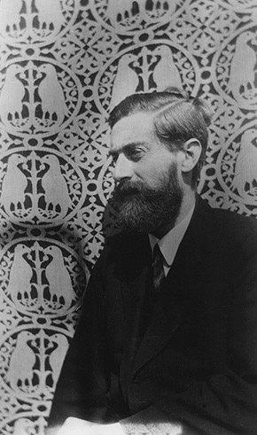

Maurits Cornelis Escher was born on June 17, 1898, in Leeuwarden, Netherlands, to Sarah and
George Escher. As a child, he hated school but enjoyed his drawing classes.

Fig 1. Picture of Escher when he was younger
He barely passed high school but he successfully entered Haarlem's School for Architectural and
Decorative Arts, originally for architecture. Escher decided to take up graphic arts under the
recommendation of his mentor, Samuel Jessurun de Mesquita.
Fig 2. Picture of Samuel Jessurun de Mesquita
Escher traveled to the Mediterranean in the early 1920s and was profoundly influenced by the wonders
of the Moor-designed Alhambra Palace in Granada, Spain. He met Jetta Umiker in 1923; they married
the following year, going on to have three children: George, Arthur, and Jan.
Fig 3. Picture of the Alhambra Palace in Granada
By 1929, his work had grown in popularity and demand and he had held a number of exhibitions in Holland
and Switzerland. During this time Escher began to experiment with ideas of metamorphosis presenting an
object turning into something completely different and he would return to these ideas in his later work.
Fig 4. One of Escher's first pieces with metamorphosis, Metamorphosis 1"
Between 1930 and 1940 the Eschers moved around Europe often, from Switzerland to Belgium to Holland back to
the Netherlands. At this point, Escher's works were wildly popular worldwide and some of the most iconic pieces
of his life. M.C. Escher died on March 27, 1972, in a retirement community, in Laren, Netherlands